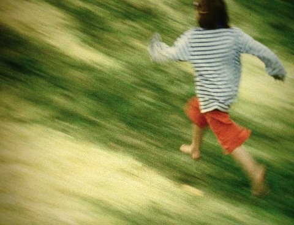
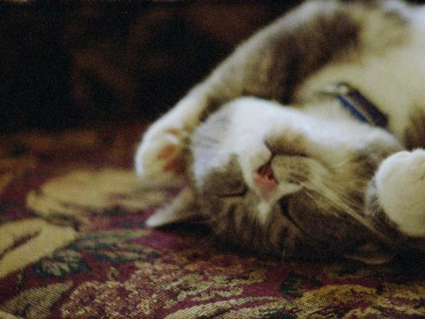

Film Lecture: UTE AURAND & ROBERT BEAVERS
UNDERDOX halbzeit 14. juni 2018 19 uhr filmmuseum münchen
light & shadows
Die experimentellen Filmemacher Ute Aurand und Robert Beavers
begreifen ihre 16mm-Bolex-Kamera als unmittelbares Sehinstrument.
Sie machen poetisches Kino, Bildverdichtungen und Haikus. Ihre Filme
bewegen sich auf dem Terrain zwischen Kino und zeitgenössischer
Kunst und wurden u.a. im Filmmuseum Wien, bei den Kurzfilmtagen
Oberhausen, im Whitney Museum, in der Tate Modern Gallery und im
Harvard Film Archive gezeigt.
Ute Aurand und Robert Beavers sind zur Halbzeit zu Gast!
UTE AURAND: poems of a light

Ute Aurand (*1957 in Frankfurt am Main) gehört zu einer Gruppe von Frauen, die 1979 an der dffb Berlin eine weibliche, experimentelle Filmsprache entwickelten. Sie war von den Filmen des New American Cinema fasziniert, insbesondere von Jonas Mekas und Marie Menken und deren Filmtagebücher und Erinnerungen. Gleichzeitig wurde sie von der bildenden Kunst geprägt.
Website von Ute Aurand
ROBERT BEAVERS: shadows of a sound
Robert Beavers (*1949 in Massachusetts) kam 1965 mit den Filmemachern der amerikanischen Avantgarde in New York in Kontakt, was sein Leben entscheidend beeinflusste. Mit seinem Lebensgefährten Gregory J. Markopoulos († 1992) ging er nach Europa. 1980 begann er mit den berühmten Temenos-Filmvorführungen unter freiem Himmel, auf den Hügeln des Peloponnes.
2017 erhielt Robert Beavers den Stan Brakhage Vision Award.
UNDERDOX halbzeit PART I: UTE AURAND
poems of a light
UNDERDOX halbzeit PART II: ROBERT BEAVERS
shadows of a sound
|
The Hedge Theater 1986-90/2002 | 19 min |
35mm
|
The Suppliant 2010 | 5 min | 16mm Die kleine Statue des „Flehenden“ hebt ihren Arm zu einem abwesenden Gegenüber. Zu einer Gottheit? Zur strahlenden Sonne, die durch die Fenster einer Wohnung der Brooklyn Heights eindringt? Zum Freund, der die Räume einst bewohn- te? Eine Anrufung, ein Lied. |
|
„Der Klang, die Welt...” 2018 | 4 min | 16mm
|